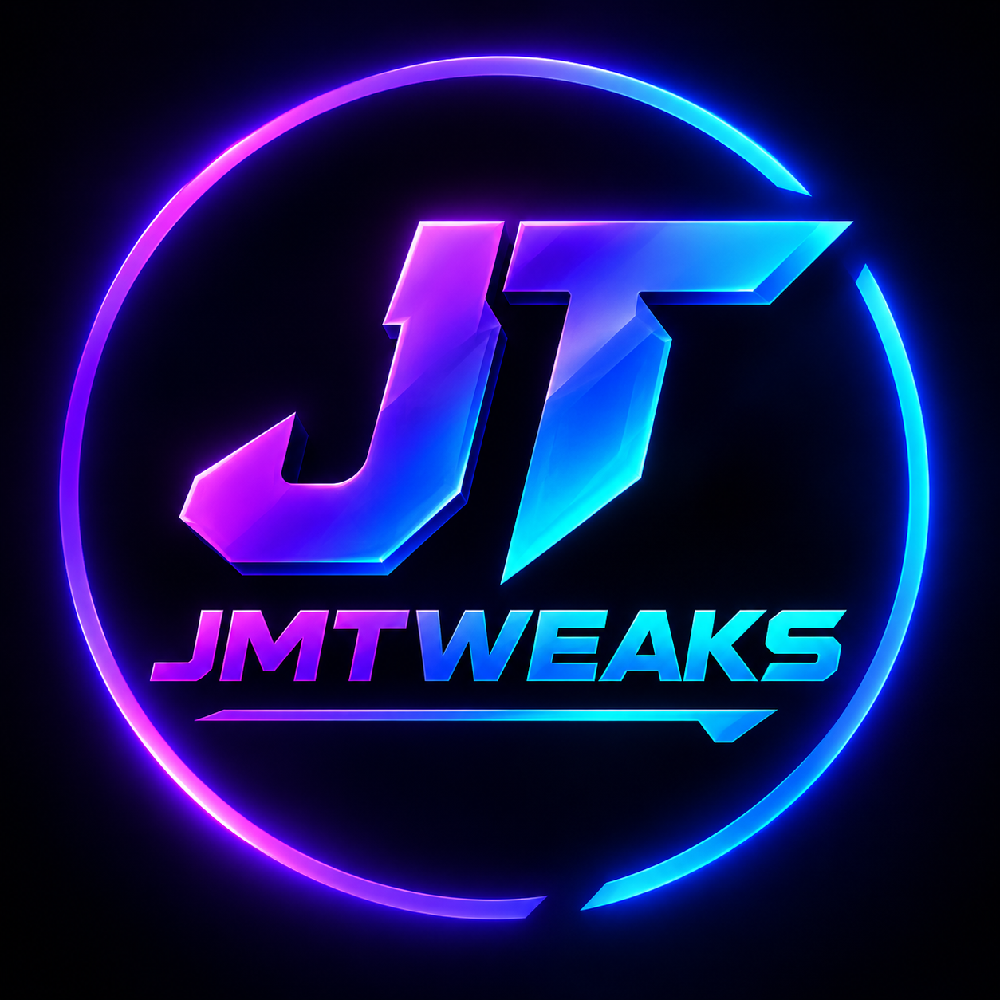

System Optimization
Performance-focused Windows tweaks and power-plan options.

JMTWEAKSWINDOWS PERFORMANCE TOOLKIT
JMTWEAKS brings system cleanup, gaming optimizations, network tweaks, debloating, startup management, process tools, and restore options into one Windows application.
Pro checkout is currently in test mode while the licensing system is being prepared.
WHAT'S INCLUDED
One interface for common Windows optimization and maintenance tasks.
Performance-focused Windows tweaks and power-plan options.
Gaming-mode and Windows gaming-related settings in one place.
Network optimization tools and DNS configuration options.
Remove selected unwanted apps and clean temporary files.
Review and manage running Windows processes from the app.
Review startup entries and manage what launches with Windows.
Backup and restore-oriented tools for safer system changes.
View useful system information from one dashboard.
JMTWEAKS PRO
Use the test checkout below while the real customer licensing system is being completed.
Windows optimization tools for performance, gaming, network settings, cleanup, startup management, and more.
ABOUT JMTWEAKS
JMTWEAKS is designed to put common optimization and maintenance controls behind a single, straightforward interface.
The application does not intentionally disable Windows Defender, Firewall, or Windows Update.
Need help? Join the Discord →JMTWEAKS COMMUNITY
The official Discord is the place for announcements, support, feedback, and community discussion.